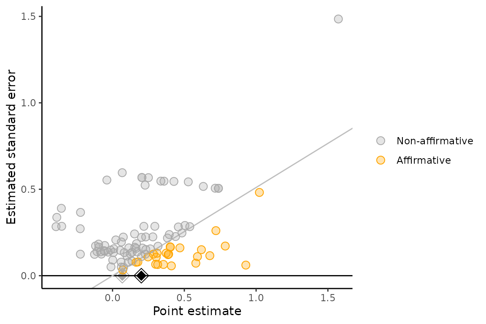
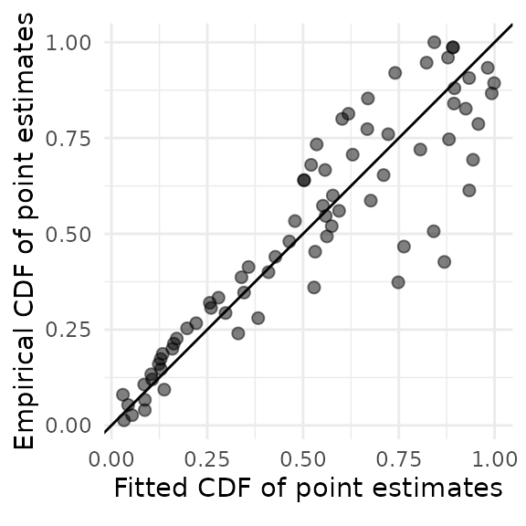

This is a tutorial on how to use the packages
PublicationBias, phacking, and
multibiasmeta. Each package provides functions to conduct
two types of sensitivity analysis:
- A meta-analysis that is corrected for one or more within-study or
across-study biases, for user-specified sensitivity parameters:
PublicationBias::pubbias_meta(),phacking::phacking_meta(),multibiasmeta::multibias_meta() - The minimum severity of the bias under consideration that would be
required to “explain away” the results of the meta-analysis:
PublicationBias::svalue(),multibiasmeta::evalue()
Each of these functions returns an object of class
metabias, which consists of a list with four elements:
data, values, stats,
fits.
-
data: Dataframe containing data used to fit the model(s), with added columns for any values computed during model fitting. -
values: List of values of arguments passed to the function. -
stats: Dataframe of summary statistics from the model fit(s). -
fits: List of fitted objects (which have a class that depends on the underlying fitting methods, e.g.robumeta::robuorrstan::stanfit).
This vignette goes through examples of how to use each of these functions.
The example dataset meta_meat is from a meta-analysis
that assessed the effectiveness of educational behavior interventions
that attempt to reduce meat consumption by appealing to animal welfare
(Mathur et al, 2021). The
meta-analysis included 100 studies (from 34 articles) that measured
behavioral or self-reported outcomes related to meat consumption or
purchasing. Point estimates (yi) are on the log relative
risk (RR) scale. The variable cluster corresponds to the
paper that contributed the point estimate, and randomized
is a boolean indicating whether the study was randomized.
meta_meat
#> # A tibble: 100 × 4
#> yi vi cluster randomized
#> <dbl> <dbl> <chr> <lgl>
#> 1 -0.388 0.114 ACE 2013a FALSE
#> 2 0.00143 0.00818 ACE 2013a FALSE
#> 3 -0.0778 0.0156 ACE 2013b FALSE
#> 4 0.395 0.0567 Amiot 2018 TRUE
#> 5 0.109 0.006 Anderson 2016 TRUE
#> 6 0.0711 0.00110 Anderson 2017 TRUE
#> 7 0.177 0.00629 Anderson 2017 TRUE
#> 8 0.123 0.0161 Bertolaso 2015 TRUE
#> 9 0.310 0.0169 Bertolaso 2015 TRUE
#> 10 0.229 0.0154 Bertolaso 2015 TRUE
#> # … with 90 more rowsWe will first conduct a standard meta-analysis point estimate from a fixed-effects meta-analysis, ignoring heterogeneity and clustering.
metafor::rma(yi, vi, data = meta_meat, method = "FE")
#>
#> Fixed-Effects Model (k = 100)
#>
#> I^2 (total heterogeneity / total variability): 76.18%
#> H^2 (total variability / sampling variability): 4.20
#>
#> Test for Heterogeneity:
#> Q(df = 99) = 415.5315, p-val < .0001
#>
#> Model Results:
#>
#> estimate se zval pval ci.lb ci.ub
#> 0.2004 0.0117 17.0885 <.0001 0.1774 0.2234 ***
#>
#> ---
#> Signif. codes: 0 '***' 0.001 '**' 0.01 '*' 0.05 '.' 0.1 ' ' 1Now we will conduct a robust random-effects meta-analysis that accounts for heterogeneity and clustering, but still is not corrected for any potential biases.
robumeta::robu(yi ~ 1, data = meta_meat, studynum = cluster, var.eff.size = vi)
#> RVE: Correlated Effects Model with Small-Sample Corrections
#>
#> Model: yi ~ 1
#>
#> Number of studies = 34
#> Number of outcomes = 100 (min = 1 , mean = 2.94 , median = 2 , max = 17 )
#> Rho = 0.8
#> I.sq = 68.59531
#> Tau.sq = 0.02858774
#>
#> Estimate StdErr t-value dfs P(|t|>) 95% CI.L 95% CI.U Sig
#> 1 X.Intercept. 0.164 0.0398 4.11 27.6 0.000317 0.0822 0.245 ***
#> ---
#> Signif. codes: < .01 *** < .05 ** < .10 *
#> ---
#> Note: If df < 4, do not trust the resultsPublication bias
The pubbias functions conduct sensitivity analyses for
publication bias in which affirmative studies (i.e., those with
statistically significant estimates in the desired direction) are more
likely to be published than nonaffirmative studies (i.e., those with
nonsignificant estimates or estimates in the undesired direction) by a
certain ratio, called selection_ratio (Mathur & VanderWeele, 2020). To
provide intuition, suppose we knew that affirmative studies were twice
as likely to be published as nonaffirmative studies. We could then
correct the meta-analytic estimate by having each published
nonaffirmative study contribute twice as much weight to the analysis as
each affirmative study, which would counteract the publication process’
two-fold favoring of affirmative studies. This idea is similar to
familiar procedures used to correct survey samples for nonrepresentative
sampling.
However, in practice, we do not know exactly how severe publication bias is. In this case, we can instead conduct sensitivity analyses that describe the severity of publication bias (i.e., the selection_ratio) that would be required to explain away the results of the meta-analysis (e.g., to shift the point estimate to the null).
Correcting for publication bias
For a chosen ratio of publication probabilities,
selection_ratio, we can estimate a publication
bias-corrected pooled point estimate and confidence interval per Mathur & VanderWeele (2020). Model
options include fixed-effects (a.k.a. “common-effect”), robust
independent, and robust clustered specifications.
Since a selection ratio of 1 corresponds to no publication bias
(i.e., affirmative and nonaffirmative studies are equally likely to be
published), passing selection_ratio = 1 recovers the
uncorrected, fixed-effects point estimate that we obtained above.
pubbias_meat_1 <- pubbias_meta(meta_meat$yi,
meta_meat$vi,
model_type = "fixed",
selection_ratio = 1)
pubbias_meat_1$stats
#> # A tibble: 1 × 6
#> model estimate se ci_lower ci_upper p_value
#> <chr> <dbl> <dbl> <dbl> <dbl> <dbl>
#> 1 pubbias 0.200 0.0117 0.177 0.224 0To consider publication bias, we can choose a value of
selection_ratio that is greater than 1. For example, we
will consider publication bias such that affirmative results are 4 times
more likely to be published than nonaffirmative results.
pubbias_meat_4 <- pubbias_meta(meta_meat$yi,
meta_meat$vi,
model_type = "fixed",
selection_ratio = sr)
pubbias_meat_4$stats
#> # A tibble: 1 × 6
#> model estimate se ci_lower ci_upper p_value
#> <chr> <dbl> <dbl> <dbl> <dbl> <dbl>
#> 1 pubbias 0.120 0.0136 0.0931 0.147 4.13e-14This fixed-effects meta-analysis indicates that if affirmative (i.e., significant and positive) studies were 4 times more likely to be published than nonaffirmative (i.e., nonsignificant or negative) studies, the meta-analytic point estimate corrected for publication bias would be 0.12 (95% CI [0.09, 0.15]).
Now we will use the same selection ratio, but will use the robust
random-effects specification to account for heterogeneity and for
clustering of point estimates within papers (which is the default
behavior of pubbias_meta()).
pubbias_meat_4 <- pubbias_meta(meta_meat$yi,
meta_meat$vi,
cluster = meta_meat$cluster,
selection_ratio = 4)
pubbias_meat_4$stats
#> model estimate se ci_lower ci_upper p_value
#> 1 pubbias 0.1293691 0.03194793 0.06212993 0.1966083 0.0007856887This random-effects meta-analysis indicates that, if affirmative (i.e., significant and positive) studies were 4 times more likely to be published than nonaffirmative (i.e., nonsignificant or negative) studies, the meta-analytic point estimate corrected for publication bias would be 0.13 (95% CI [0.06, 0.20]).
pubbias_meta has a number of arguments that can be used
to change the model of publication bias. By default,
pubbias_meta assumes that publication bias favors
positive-signed, significant results, but in some contexts publication
bias might instead favor negative-signed, significant results (e.g., if
investigators wish to show that a treatment has a protective effect on a
detrimental outcome). In such cases, you should pass
favor_positive = FALSE.
Also, the function by default assumes that publication bias
considered a one-tailed model of publication bias in which significant
results with positive point estimates are favored, while significant
results with negative point estimates and nonsignificant results are
equally disfavored. In some contexts, it is possible instead that
significant results are favored regardless of direction, while only
nonsignificant results are disfavored (called “two-tailed” selection).
We recommend by default conducting sensitivity analyses that assume
one-tailed selection because this is more statistically conservative,
but you can also assess two-tailed selection using the argument
selection_tails.
Finally, the function by default assumes that results are treated as
significant at α = 0.05. To change this threshold at which publication
bias is assumed to operate, you can use the argument
alpha_select.
Worst-case meta-analysis
As a limiting case, we can conduct a meta-analysis of nonaffirmative results (MAN) that accounts for worst-case publication bias. That is, if affirmative studies were infinitely more likely to be published than nonaffirmative studies, we could obtain a corrected estimate by having nonaffirmative studies contribute infinitely more weight to the analysis than affirmative studies. This in fact corresponds to retaining only the nonaffirmative studies in analysis. Unlike standard publication bias methods, MAN can help assess robustness to other forms of selective reporting besides publication bias. In particular, MAN accommodates situations in which investigators manipulate or selectively report results within studies, called “p-hacking” (Mathur, 2022).
pubbias_meat_4 <- pubbias_meta(meta_meat$yi,
meta_meat$vi,
cluster = meta_meat$cluster,
selection_ratio = 4,
return_worst_meta = TRUE)
pubbias_meat_4$stats
#> model estimate se ci_lower ci_upper p_value
#> 1 pubbias 0.1293691 0.03194793 0.06212993 0.1966083 0.0007856887
#> 2 worst_case 0.0931093 0.03049443 0.02865793 0.1575607 0.0073343486If there were worst-case publication bias (i.e., that favors affirmative results infinitely more than nonaffirmative results), the corrected meta-analytic point estimate would be 0.09 (95% CI [0.03, 0.16]).
Publication bias required to explain away the results
We can also calculate the S-value, defined as the severity of
publication bias (i.e., the ratio by which affirmative studies are more
likely to be published than nonaffirmative studies) that would be
required to shift the pooled point estimate or its confidence interval
limit to the null, or to any other value q (which defaults
to 0, the null).
svalue_meat_0 <- pubbias_svalue(meta_meat$yi,
meta_meat$vi,
cluster = meta_meat$cluster)
svalue_meat_0$stats
#> # A tibble: 1 × 2
#> sval_est sval_ci
#> <chr> <chr>
#> 1 Not possible Not possibleThese results indicate that, under this model of publication bias, there is no amount of publication bias that would shift the point estimate to 0. In fact, there is also no amount of publication bias that would shift the CI bound to 0.
Now we will consider the severity of publication bias required to
shift the point estimate or its CI bound to q = 0.1 rather
than to the null.
svalue_meat_01 <- pubbias_svalue(meta_meat$yi,
meta_meat$vi,
cluster = meta_meat$cluster,
q = 0.1)
svalue_meat_01$stats
#> # A tibble: 1 × 2
#> sval_est sval_ci
#> <dbl> <dbl>
#> 1 23.2 1.48These results indicate that, for the point estimate corrected for publication bias to shift to 0.10, affirmative studies would need to be 23.19 times more likely to be published than nonaffirmative studies. Additionally, for the CI bound corrected for publication bias to shift to 0.10, affirmative studies would need to be 1.48 times more likely to be published than nonaffirmative studies.
In general, if the S-value is small enough that it represents a plausible amount of publication bias (see the empirical benchmarks provided in (Mathur & VanderWeele, 2019), then the meta-analysis may be considered relatively sensitive to publication bias. In contrast, if the S-value represents an implausibly large amount of publication bias, then one might consider the meta-analysis to be relatively robust. These methods can sometimes indicate that no amount of publication bias under the assumed model could “explain away” the results of a meta-analysis, providing a compelling argument for robustness.
Significance funnel plot
As a visual supplement to the proposed sensitivity analyses, we
suggest presenting a modified funnel plot called the “significance
funnel plot”. This plot distinguishes between affirmative and
nonaffirmative studies, helping to detect the extent to which the
nonaffirmative studies’ point estimates are systematically smaller than
the entire set of point estimates. The estimate among only
nonaffirmative studies (gray diamond) represents a corrected estimate
under worst-case publication bias. If the gray diamond represents a
negligible effect size or if it is much smaller than the pooled estimate
among all studies (black diamond), this suggests that the meta-analysis
may not be robust to extreme publication bias. Numerical sensitivity
analyses (via pubbias_svalue() or
pubbias_meta()) should still be carried out for more
precise quantitative conclusions.
significance_funnel(yi = meta_meat$yi, vi = meta_meat$vi)
p-hacking
Publication bias, as assessed by standard methods, corresponds to a selection process that filters which studies are published and available for inclusion in meta-analysis. However, there can also be selective reporting within studies. For example, investigators may “p-hack” by analyzing multiple outcomes and reporting only affirmative results among these analyses, or by fitting multiple models to the same dataset in an attempt to obtain an affirmative estimate. Standard methods for publication bias can be biased in either direction when there is p-hacking (Mathur, 2022). However, meta-analysis of nonaffirmative results (MAN, described above) MAN still provides a conservative estimate (i.e., biased toward the null) if there is p-hacking that favors affirmative results (Mathur, 2022).
Additional sensitivity analyses for joint publication bias and p-hacking can be conducted. Assuming that published, hacked studies never have nonaffirmative estimates (e.g., their investigators p-hack until they obtain an affirmative estimate), we propose estimating the underlying meta-analytic mean by fitting “right-truncated meta-analysis” (RTMA) to the published nonaffirmative estimates, which are unhacked.
Unlike the other packages, the phacking package uses Stan to fit models and as such requires
Stan and RStan to be
installed.
Correction for p-hacking
The function phacking_meta() fits right-truncated
meta-analysis (RTMA), a bias correction for the joint effects of
p-hacking (i.e., manipulation of results within studies to
obtain significant, positive estimates) and traditional publication bias
(i.e., the selective publication of studies with significant, positive
results) in meta-analyses.
phacking_meat <- phacking_meta(yi = meta_meat$yi, vi = meta_meat$vi, parallelize = FALSE)
#>
#> SAMPLING FOR MODEL 'phacking_rtma' NOW (CHAIN 1).
#> Chain 1:
#> Chain 1: Gradient evaluation took 0.000306 seconds
#> Chain 1: 1000 transitions using 10 leapfrog steps per transition would take 3.06 seconds.
#> Chain 1: Adjust your expectations accordingly!
#> Chain 1:
#> Chain 1:
#> Chain 1: Iteration: 1 / 2000 [ 0%] (Warmup)
#> Chain 1: Iteration: 200 / 2000 [ 10%] (Warmup)
#> Chain 1: Iteration: 400 / 2000 [ 20%] (Warmup)
#> Chain 1: Iteration: 600 / 2000 [ 30%] (Warmup)
#> Chain 1: Iteration: 800 / 2000 [ 40%] (Warmup)
#> Chain 1: Iteration: 1000 / 2000 [ 50%] (Warmup)
#> Chain 1: Iteration: 1001 / 2000 [ 50%] (Sampling)
#> Chain 1: Iteration: 1200 / 2000 [ 60%] (Sampling)
#> Chain 1: Iteration: 1400 / 2000 [ 70%] (Sampling)
#> Chain 1: Iteration: 1600 / 2000 [ 80%] (Sampling)
#> Chain 1: Iteration: 1800 / 2000 [ 90%] (Sampling)
#> Chain 1: Iteration: 2000 / 2000 [100%] (Sampling)
#> Chain 1:
#> Chain 1: Elapsed Time: 1.91457 seconds (Warm-up)
#> Chain 1: 1.81907 seconds (Sampling)
#> Chain 1: 3.73364 seconds (Total)
#> Chain 1:
#>
#> SAMPLING FOR MODEL 'phacking_rtma' NOW (CHAIN 2).
#> Chain 2:
#> Chain 2: Gradient evaluation took 0.00013 seconds
#> Chain 2: 1000 transitions using 10 leapfrog steps per transition would take 1.3 seconds.
#> Chain 2: Adjust your expectations accordingly!
#> Chain 2:
#> Chain 2:
#> Chain 2: Iteration: 1 / 2000 [ 0%] (Warmup)
#> Chain 2: Iteration: 200 / 2000 [ 10%] (Warmup)
#> Chain 2: Iteration: 400 / 2000 [ 20%] (Warmup)
#> Chain 2: Iteration: 600 / 2000 [ 30%] (Warmup)
#> Chain 2: Iteration: 800 / 2000 [ 40%] (Warmup)
#> Chain 2: Iteration: 1000 / 2000 [ 50%] (Warmup)
#> Chain 2: Iteration: 1001 / 2000 [ 50%] (Sampling)
#> Chain 2: Iteration: 1200 / 2000 [ 60%] (Sampling)
#> Chain 2: Iteration: 1400 / 2000 [ 70%] (Sampling)
#> Chain 2: Iteration: 1600 / 2000 [ 80%] (Sampling)
#> Chain 2: Iteration: 1800 / 2000 [ 90%] (Sampling)
#> Chain 2: Iteration: 2000 / 2000 [100%] (Sampling)
#> Chain 2:
#> Chain 2: Elapsed Time: 1.97875 seconds (Warm-up)
#> Chain 2: 1.52932 seconds (Sampling)
#> Chain 2: 3.50807 seconds (Total)
#> Chain 2:
#>
#> SAMPLING FOR MODEL 'phacking_rtma' NOW (CHAIN 3).
#> Chain 3:
#> Chain 3: Gradient evaluation took 0.000126 seconds
#> Chain 3: 1000 transitions using 10 leapfrog steps per transition would take 1.26 seconds.
#> Chain 3: Adjust your expectations accordingly!
#> Chain 3:
#> Chain 3:
#> Chain 3: Iteration: 1 / 2000 [ 0%] (Warmup)
#> Chain 3: Iteration: 200 / 2000 [ 10%] (Warmup)
#> Chain 3: Iteration: 400 / 2000 [ 20%] (Warmup)
#> Chain 3: Iteration: 600 / 2000 [ 30%] (Warmup)
#> Chain 3: Iteration: 800 / 2000 [ 40%] (Warmup)
#> Chain 3: Iteration: 1000 / 2000 [ 50%] (Warmup)
#> Chain 3: Iteration: 1001 / 2000 [ 50%] (Sampling)
#> Chain 3: Iteration: 1200 / 2000 [ 60%] (Sampling)
#> Chain 3: Iteration: 1400 / 2000 [ 70%] (Sampling)
#> Chain 3: Iteration: 1600 / 2000 [ 80%] (Sampling)
#> Chain 3: Iteration: 1800 / 2000 [ 90%] (Sampling)
#> Chain 3: Iteration: 2000 / 2000 [100%] (Sampling)
#> Chain 3:
#> Chain 3: Elapsed Time: 2.10843 seconds (Warm-up)
#> Chain 3: 2.00997 seconds (Sampling)
#> Chain 3: 4.1184 seconds (Total)
#> Chain 3:
#>
#> SAMPLING FOR MODEL 'phacking_rtma' NOW (CHAIN 4).
#> Chain 4:
#> Chain 4: Gradient evaluation took 0.000122 seconds
#> Chain 4: 1000 transitions using 10 leapfrog steps per transition would take 1.22 seconds.
#> Chain 4: Adjust your expectations accordingly!
#> Chain 4:
#> Chain 4:
#> Chain 4: Iteration: 1 / 2000 [ 0%] (Warmup)
#> Chain 4: Iteration: 200 / 2000 [ 10%] (Warmup)
#> Chain 4: Iteration: 400 / 2000 [ 20%] (Warmup)
#> Chain 4: Iteration: 600 / 2000 [ 30%] (Warmup)
#> Chain 4: Iteration: 800 / 2000 [ 40%] (Warmup)
#> Chain 4: Iteration: 1000 / 2000 [ 50%] (Warmup)
#> Chain 4: Iteration: 1001 / 2000 [ 50%] (Sampling)
#> Chain 4: Iteration: 1200 / 2000 [ 60%] (Sampling)
#> Chain 4: Iteration: 1400 / 2000 [ 70%] (Sampling)
#> Chain 4: Iteration: 1600 / 2000 [ 80%] (Sampling)
#> Chain 4: Iteration: 1800 / 2000 [ 90%] (Sampling)
#> Chain 4: Iteration: 2000 / 2000 [100%] (Sampling)
#> Chain 4:
#> Chain 4: Elapsed Time: 1.82281 seconds (Warm-up)
#> Chain 4: 1.61759 seconds (Sampling)
#> Chain 4: 3.4404 seconds (Total)
#> Chain 4:
phacking_meat$stats
#> # A tibble: 2 × 9
#> param mode median mean se ci_lower ci_upper n_eff r_hat
#> <chr> <dbl> <dbl> <dbl> <dbl> <dbl> <dbl> <dbl> <dbl>
#> 1 mu 0.209 0.273 0.294 0.00513 0.104 0.637 724. 1.00
#> 2 tau 0.142 0.187 0.189 0.00286 0.0447 0.359 782. 1.00In these results, mode, median, and
mean represent posterior modes, medians, and means
respectively. We recommend reporting the mode (Mathur, 2022). These results indicate
that, accounting for potential p-hacking and publication bias
that favor affirmative results, the estimated meta-analytic mean,
mu, is 0.21 and the estimated standard deviation of the
effects (i.e., heterogeneity), tau, is 0.14.
Diagnostic plots
To assess the fit of right-truncated meta-analysis and possible violations of its distributional assumptions, we can plot the fitted cumulative distribution function (CDF) of the published nonaffirmative estimates versus their empirical CDF. If the points do not adhere fairly closely to a 45-degree line, the right-truncated meta-analysis may not fit adequately. Here, the fit is a bit questionable because the points toward the right-hand side of the plot do not adhere very closely to the line.
rtma_qqplot(phacking_meat)
As another diagnostic plot, we can examine the Z-scores of all published point estimates. When p-hacking favors affirmative estimates over nonaffirmative estimates, as our methods and others assume, Z-scores may disproportionately concentrate just above the critical value (e.g., 1.96). Importantly, the presence of p-hacking does not guarantee a concentration of Z-scores just above the critical value, so it is prudent to proceed with the fitting RTMA even if no such concentration is apparent. In contrast, if Z-scores also concentrate just below the critical value, or if they also concentrate below the sign-reversed critical value (e.g., –1.96), this could indicate forms of p-hacking that violate the assumptions of RTMA. This plot does not suggest a concentration of Z-scores just below 1.96.
z_density(yi = meta_meat$yi, vi = meta_meat$vi)
Multiple biases
In addition to publication bias and/or p-hacking, meta-analyses can be compromised by internal biases (e.g., confounding in nonrandomized studies) as well as publication bias. These biases often operate nonadditively: publication bias that favors significant, positive results selects indirectly for studies with more internal bias. These sensitivity analyses address two questions: (1) “For a given severity of internal bias across studies and of publication bias, how much could the results change?”; and (2) “For a given severity of publication bias, how severe would internal bias have to be, hypothetically, to attenuate the results to the null or by a given amount?” These methods consider the average internal bias across studies, obviating specifying the bias in each study individually. The analyst can assume that internal bias affects all studies, or alternatively a known subset (e.g., nonrandomized studies). The internal bias can be of unknown origin or, for certain types of bias in causal estimates, can be bounded analytically. The analyst can specify the severity of publication bias or, alternatively, consider “worst-case” publication bias as described above.
These sensitivity analyses involve specifying the selection ratio for
publication bias, the mean additive internal bias among published,
internally biased studies that are affirmative
(bias_affirmative) and that are nonaffirmative
(bias_nonaffirmative). respectively. Further guidance on
choosing these sensitivity parameters is given in Mathur (2022).
Correction for internal bias and/or publication bias
If we assume that no studies are internally biased
(bias_affirmative = 0,
bias_nonaffirmative = 0) but that there is publication bias
(e.g., selection ratio = 4), then the results will match
those of pubbias_meta.
multi_meat_0 <- multibias_meta(yi = meta_meat$yi,
vi = meta_meat$vi,
selection_ratio = 4,
bias_affirmative = 0,
bias_nonaffirmative = 0)
multi_meat_0$stats
#> model estimate se ci_lower ci_upper p_value
#> 1 multibias 0.1293691 0.02103083 0.08711307 0.1716251 1.335523e-07These results indicate that if affirmative studies were 4 times more likely to be published than nonaffirmative studies and studies did not have internal bias, the corrected meta-analytic point estimate would be 0.13 (95% CI [0.09, 0.17]).
Following Mathur (2022), we now consider publication bias in which affirmative studies are 4 times more likely to be published, and also in which the nonrandomized studies are, on average, biased due to confounding. For more details on specifying the values of the latter sensitivity parameters, see Mathur (2022).
multi_meat_1 <- multibias_meta(yi = meta_meat$yi,
vi = meta_meat$vi,
biased = !meta_meat$randomized,
selection_ratio = 4,
bias_affirmative = log(1.5),
bias_nonaffirmative = log(1.1))
multi_meat_1$stats
#> model estimate se ci_lower ci_upper p_value
#> 1 multibias 0.09491905 0.02405073 0.04662505 0.1432131 0.0002453537These results indicate that if (1) affirmative studies were 4 times
more likely to be published than nonaffirmative studies; (2)
affirmative, nonrandomized studies had a mean internal bias of
log(1.5); (3) nonaffirmative, nonrandomized studies had a
mean internal bias of log(1.1), and (4) randomized studies
had no internal bias, the corrected meta-analytic point estimate would
be 0.13 (95% CI [0.09, 0.17]).
We can repeat the sensitivity analysis, now treating all studies as internally biased (not just nonrandomized studies).
multi_meat_1 <- multibias_meta(yi = meta_meat$yi,
vi = meta_meat$vi,
biased = TRUE,
selection_ratio = 4,
bias_affirmative = log(1.5),
bias_nonaffirmative = log(1.1))
multi_meat_1$stats
#> model estimate se ci_lower ci_upper p_value
#> 1 multibias 0.01020086 0.02103083 -0.03205518 0.0524569 0.6297933Bias required to explain away the results
We can also calculate, for a given severity of publication bias, how severe the average internal bias across studies would have to be, hypothetically, to attenuate the results to the null or by a given amount. For a selection ratio of 4 and assuming that only nonrandomized studies have internal bias:
evalue_meat <- multibias_evalue(yi = meta_meat$yi,
vi = meta_meat$vi,
biased = !meta_meat$randomized,
selection_ratio = 4)
evalue_meat$stats
#> # A tibble: 1 × 2
#> bias_est bias_ci
#> <dbl> <dbl>
#> 1 0.539 0.270These results indicate that if affirmative studies are 4 more likely to get published than nonaffirmative studies, for the point estimate corrected for internal bias to shift to 0, non-randomized studies would need to have an average internal bias of 0.54. For the CI bound corrected for internal bias to shift to 0, non-randomized studies would need to have an average internal bias of 0.27.
Now we consider shifting the point estimate and CI bound to q = 0.1 rather than to the null.
evalue_meat_01 <- multibias_evalue(yi = meta_meat$yi,
vi = meta_meat$vi,
biased = !meta_meat$randomized,
selection_ratio = 4,
q = 0.1)
evalue_meat_01$stats
#> # A tibble: 1 × 2
#> bias_est bias_ci
#> <dbl> <dbl>
#> 1 0.107 0.0000737So far, we have worked with sensitivity parameters,
bias_affirmative and bias_nonaffirmative, that
simply summarize the additive internal bias across studies without
making assumptions on its source. However, for certain types of bias in
estimates of a causal parameter (e.g., a treatment effect), the bias can
be reparameterized to more directly describe structural associations
that involve latent variables, such as uncontrolled confounders, that
are responsible for the bias. These reparameterizations apply if
studies’ unadjusted estimates are on the log risk ratio scale or have
been approximately transformed to this scale via the usual approaches in
meta-analysis. Then, the sensitivity parameters regarding the bias on
the risk ratio (RR) scale can be expressed in terms of
structural associations involving latent variables. See Mathur (2022) for more details.
For example, for uncontrolled confounding, the bias on the
RR scale can be expressed in terms of the minimum strength of
confounding associations that would need to be present on average across
studies in order to produce the amount of bias indicated by
bias_est and bias_ci. For a given study, the
two relevant confounding associations are defined as: (1) the
RR by which uncontrolled confounder(s) are associated with the
exposure; and (2) the RR by which uncontrolled confounder(s)
are associated with the outcome. Both confounding associations are
conditional on any controlled covariates.
evalue_meat_conf <- multibias_evalue(yi = meta_meat$yi,
vi = meta_meat$vi,
biased = !meta_meat$randomized,
selection_ratio = 4,
assumed_bias_type = list(EValue::confounding()))
evalue_meat_conf$stats
#> # A tibble: 1 × 4
#> bias_est bias_ci evalue_est evalue_ci
#> <dbl> <dbl> <dbl> <dbl>
#> 1 0.539 0.270 2.82 1.95These results indicate that if affirmative studies as 4 more likely to get published than nonaffirmative studies, for the point estimate corrected for internal bias to shift to 0, non-randomized studies would need to have confounding associations of 2.82. For the CI bound corrected for internal bias to shift to 0.10, non-randomized studies would need to have confounding associations of 1.95. For more on the interpretation of these parameters, see Mathur (2022).